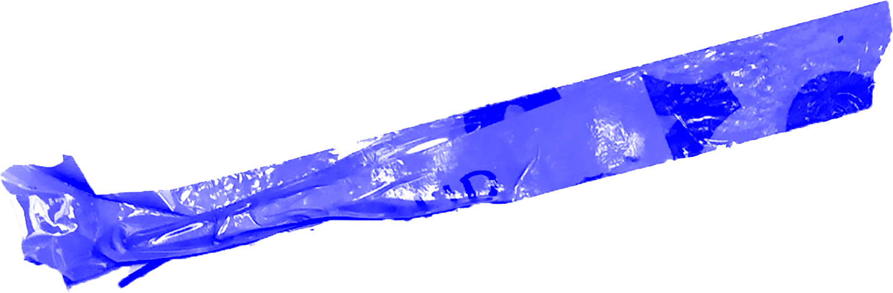
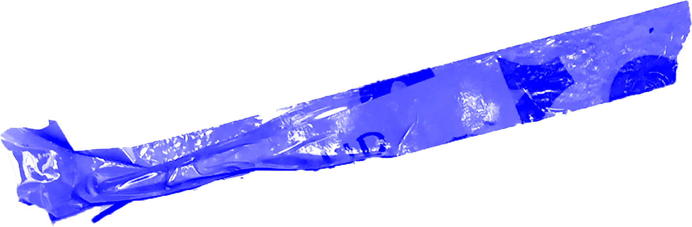
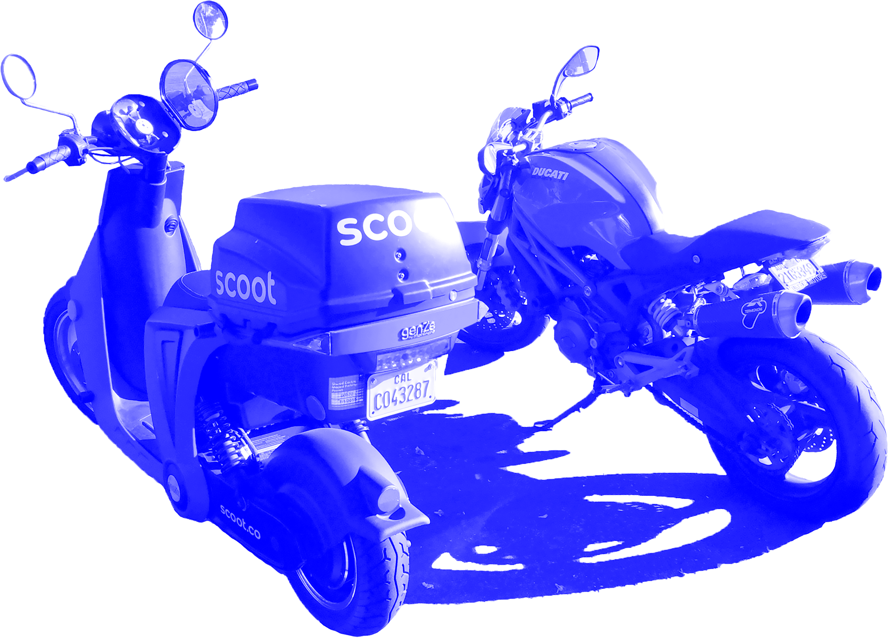
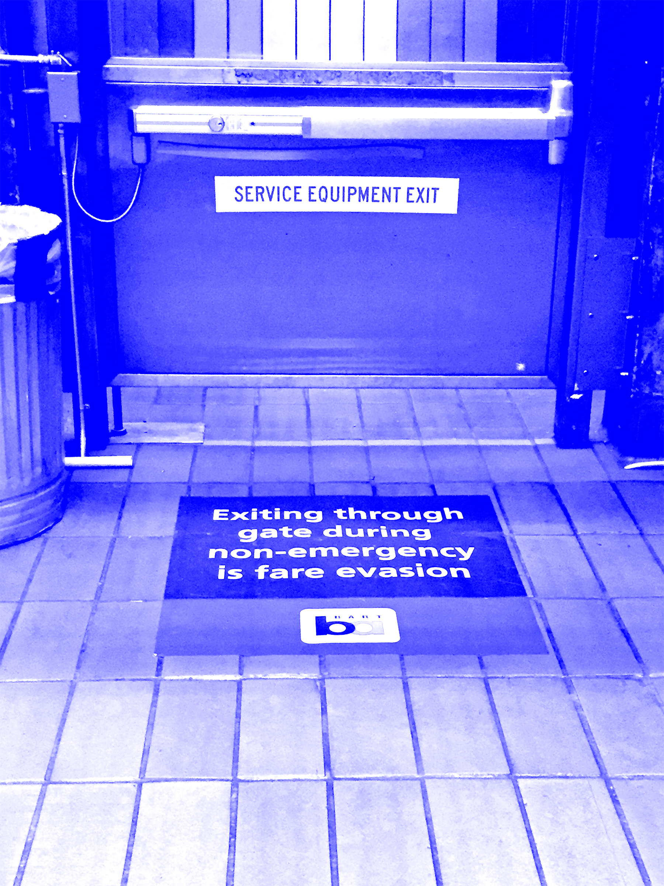
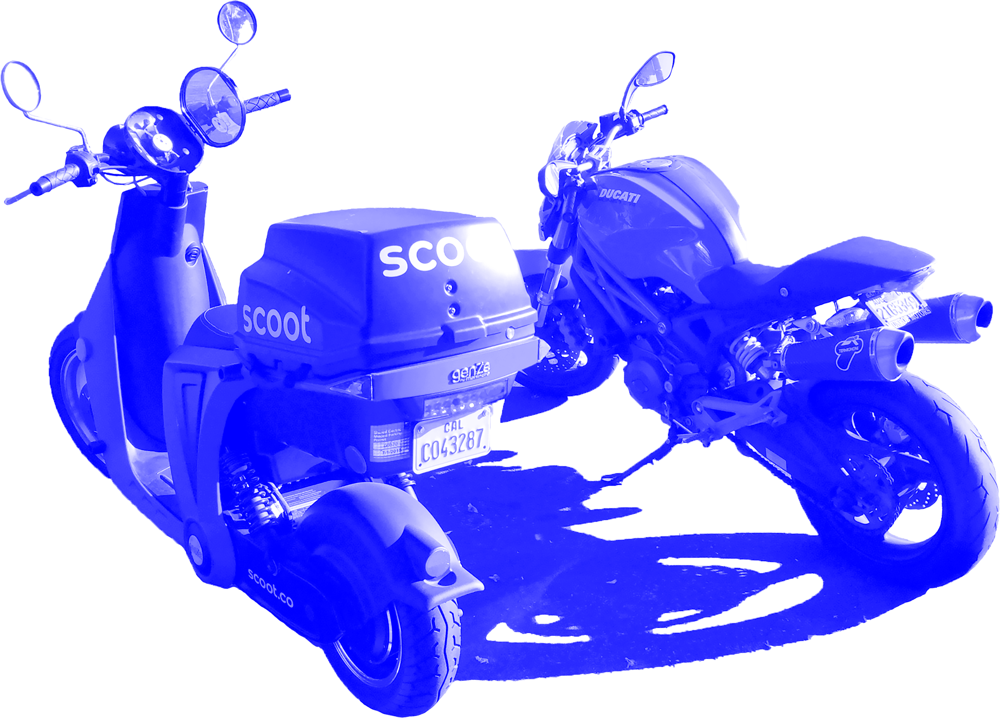
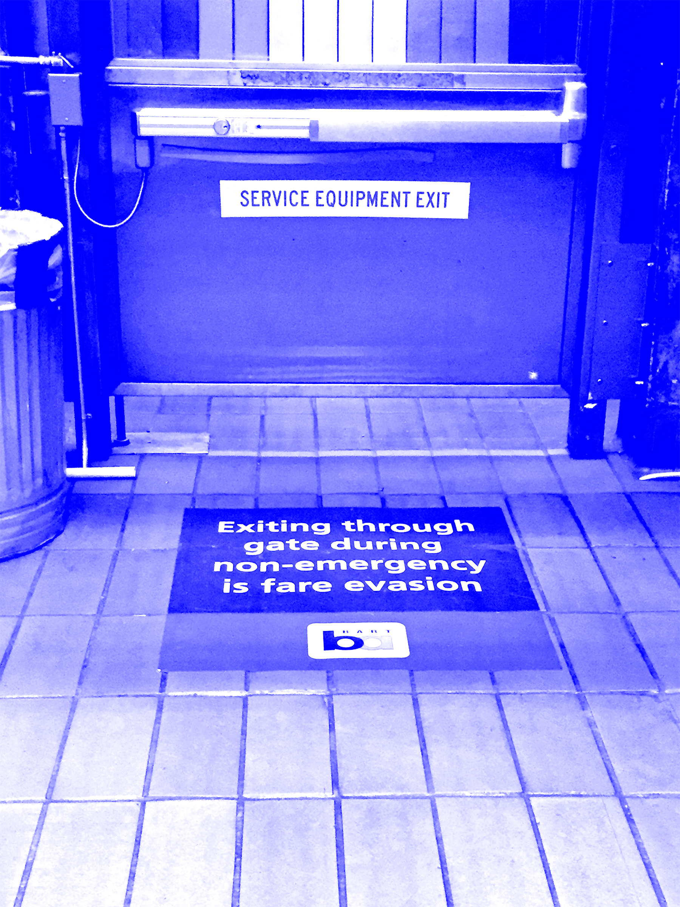

New cameras have been installed in all BART cars since the revelation in 2016 that over 70% were decoys intended to deter vandals. Over 57,000 license place numbers were recorded over a 7 month period by Automated Licence Plate Reader(ALPR)-enabled cameras at MacArthur BART station. This data was sent to a database which is viewable by ICE, thereby violating BART’s sanctury policy. As of January 1st, 2018, a new ordinance was passed by BART’s board of directors which requires proof of payment beyond station entrance turnstiles and onboard trains. Fair Inspectors are tasked with enforcing the ordinance. New floor decals have been placed in front of station turnstiles to delineate paid areas. BART estimates that it loses $15-25M each year due to fare evasion. BART’s website states that “fare cheaters erode the trust of honest, fare paying customers.” From September 10-21, 2018, 16th street station Plaza was closed for powerwashing and resurfacing purposes. The plaza was powerwashed with compressed water and ground glass, and has been resurfaced with Thermoplast, a hydrophobic material that’s easier to clean than asphalt. Cleaning and resurfacing was done by Asphalt Impressions Inc. Benches that previously populated the plaza have yet to be re-installed. Based on a hand-written poster taped to its exterior, Grandma's Cafe #2 on 16th Street past Folsom is confirmed closed as of September 25th 2018. Defensive architecture, in the form of spikes on planterboxes, is visible on 16th and Bryant. Defensive architecture in the form of large rocks, installed by Public Works and costing the city of San Francisco upwards of $8,700 have been used to prevent re-encampment in the nearby Hairball encampment located under the Alemany exit. New trees have been planted along the street at 16th and Harrison, and the margin of sidewalk around their plots has been re-paved. Along 16th between Folsom and Alabama is a strange patchwork of piecemeal re-paving jobs. But why? A Google Maps streetview image from January 2018 shows verdant, mature trees in this area. A pile of discarded items and trash often crops up directly across from these trees, along the building side of the sidewalk. In front of the McDonald's at 16th and Portrero is a crumbling patch of hillside, filled with with dead fennel plants. Concrete barriers have been placed along the base of the hillside in a halfhearted attempt to contain the erosion. Ten paces away are a pair of police barriers, seemingly a permanent fixture. In 2017, this stretch of sidewalk was the site of many tents and encampments. Scooter startups have come under increasing scrutiny after attempting to bypass city regulation by passing a milquetoast bill regulating the safety of their use.
Scan Clippercard
at turnstile; look
for new Fare Evasion decals
Ascend escalator; tread on newly sealed Plaza floor
Look for newly planted trees on 16th and Harrison
Locate JUMP bike parked on the sidewalk past Portrero
Note the additional SFPD barriers stationed next to the parking lot at the freeway underpass
Locate Scoot moped, this time parked on the street next to Design Within Reach
Look for large concrete planters where encampments used to be
Observe old MFA art studio building being demolished
Look for Technician fixing a Scoot bike on 16th and Florida, next to the SFSPCA
Notice Police Barricades and crumbling hillside next to the McDonald’s on 16th and Portrero
Quick detour to
look for defensive spikes on
windowsill
Turn left on
Kansas Street
Turn right
on 15th
Detour: left
down De
Haro
Slight Right
onto 8th
Street


 


 


